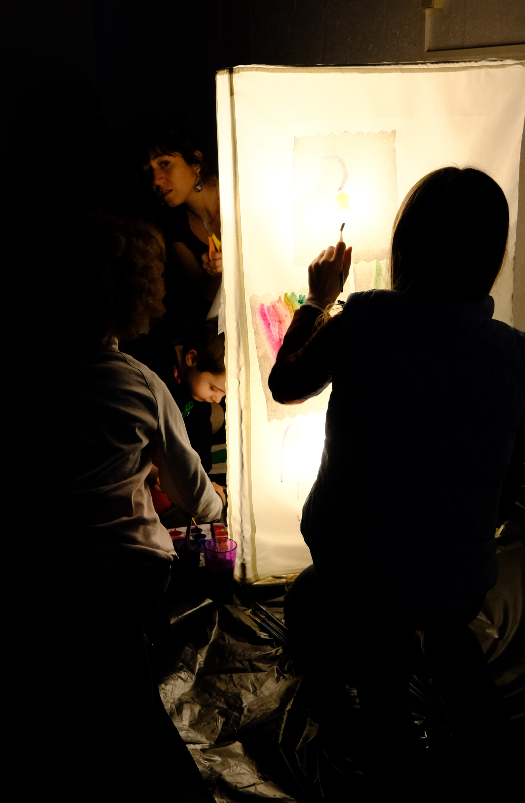
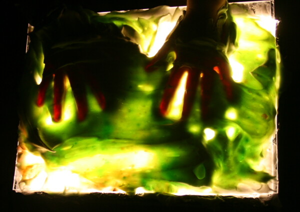
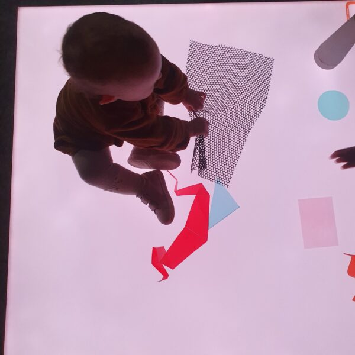

SOUND / LIGHT / LISTENING / PROJECTION
Réverbérations
joyeuses
Réverbérations joyeuses is a participatory sound and light project developed at the Centre Culturel de Jette in Brussels in 2022.
Through listening, light, sound and projection, participants experimented with different ways of transforming space collectively.
Developed first as a workshop and later as a performance, the project approached these elements as materials for collective composition.

WORKSHOP
During the workshop, listening became a starting point for collective experimentation with sound, light and projected images.
Participants explored how gestures and simple manipulations could alter light, images, sound and the perception of the surrounding space.

FROM WORKSHOP TO PERFORMANCE
The experiments developed during the workshops gradually became material for a collective performance.
Sound, light and projection were brought together through gestures, improvisation and shared attention.
INTERACTION / MANIPULATION


CONTEXT
PLACE
Centre Culturel de Jette
Brussels, Belgium
YEAR
2022
FORMAT
Workshop / Performance
ARTISTIC DIRECTION
Ilaria Fantini
Concept, workshop design and facilitation, sound, listening, light and projection experiments.